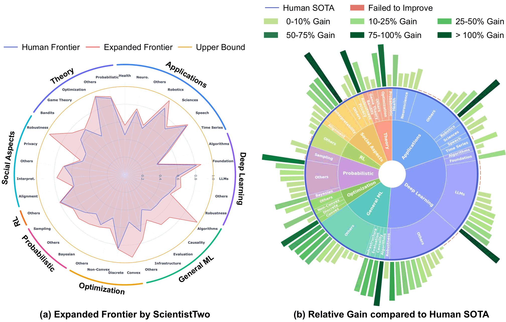
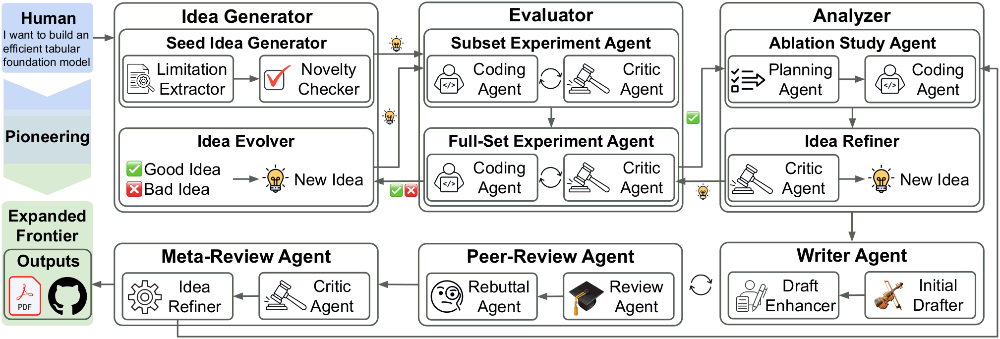

What the integrity audit checks. Every paper is re-examined against its own artifacts: the released code is re-run to confirm each reported number, the solution is checked for specification violations and reward hacking, every citation is verified to exist, and the written method is matched line-by-line against the implementation. ScientistTwo's papers are not only rated at expert level—their results are fully verified and reproducible.
The Papers
86 papers autonomously generated across eight AI domains. Select a domain, then a paper to preview it below.
See It Run
Coverage
The generated papers span eight AI domains, each broken down into the sub-domain the paper addresses and the method it introduces. Click a domain to jump to its papers in the gallery above.
Expanding the Frontier
ScientistTwo autonomously pushes the frontier of human knowledge across ten-plus research domains—LLMs, robotics, neuroscience, speech, robustness, reinforcement learning, game theory, privacy, optimization, and time series—producing publication-quality papers together with fully verified codebases. Across 107 research problems drawn from recent top-tier publications, ScientistTwo improves on the human state-of-the-art in 86 of them (an 80.4% success rate), with an average relative improvement of 25.2%.

How It Works
ScientistTwo runs the full research cycle on its own: it generates and evolves ideas, validates them experimentally, isolates what actually works, writes the manuscript, and then subjects that manuscript to its own peer review—looping back until the work clears a publication bar.

Ideas are judged on comprehensive multi-dataset benchmarks rather than a single metric, avoiding overfitting. A subset-first strategy filters candidates on representative benchmark slices before committing compute to full-scale experiments.
Mirroring the empirical rigor of expert researchers, ScientistTwo designs and runs its own ablation studies to isolate each component's contribution, then prunes the ineffective ones and sharpens its core hypothesis.
A Peer-Review Agent critiques every draft, and a Rebuttal Agent answers by conceiving, coding, and running new targeted experiments—not just editing text. A Meta-Review Agent supervises the cycle, re-triggering refinement until rigorous acceptance criteria are satisfied.
Main Results
We score every paper with two automated reviewers—ScholarPeer and the Stanford Agentic Reviewer—and compare against both prior research agents and papers actually accepted at NeurIPS 2025, ICLR 2026, and ICML 2026, whose problem specifications and codebases serve as the benchmark tasks. ScientistTwo reaches a 91.9% acceptance rate under ScholarPeer, and is the only agent to clear the Stanford Agentic Reviewer at all—72.1% of its papers meet that bar, while every baseline scores 0%.
| Framework | # Papers | ScholarPeer | Stanford Agentic Reviewer | ||
|---|---|---|---|---|---|
| Avg. Rating | Accept Rate | Avg. Rating | Accept Rate | ||
| Human-authored | |||||
| ICLR 2026 Accepted | 5 | 6.8 ±1.6 | 60.0% | 5.2 ±0.7 | 60.0% |
| NeurIPS 2025 Accepted | 38 | 6.2 ±1.9 | 65.8% | 5.5 ±0.7 | 76.3% |
| ICML 2026 Spotlight | 64 | 6.9 ±1.5 | 79.7% | 6.1 ±0.5 | 96.9% |
| AI-generated | |||||
| AI-Researcher | 7 | 1.0 ±0.0 | 0.0% | 2.4 ±0.6 | 0.0% |
| CycleResearcher | 6 | 1.0 ±0.0 | 0.0% | 2.8 ±1.0 | 0.0% |
| AI Scientist-v2 | 3 | 2.0 ±1.0 | 0.0% | 2.5 ±0.2 | 0.0% |
| AutoResearchClaw | 4 | 2.5 ±1.0 | 0.0% | 3.7 ±0.5 | 0.0% |
| Zochi | 2 | 3.0 ±0.0 | 0.0% | 2.9 ±0.6 | 0.0% |
| DeepScientist | 3 | 3.0 ±0.0 | 0.0% | 4.1 ±0.6 | 0.0% |
| ScientistOne | 21 | 3.8 ±1.2 | 14.3% | 4.1 ±0.7 | 0.0% |
| ScientistTwo (Ours) | 86 | 7.5 ±1.3 | 91.9% | 5.7 ±0.6 | 72.1% |
Average review ratings (1–10 scale) with standard deviations, and acceptance rates. “# Papers” is the number of papers aggregated per row.
Papers generated by ScientistTwo surpass the average scores of accepted ICLR 2026 and NeurIPS 2025 papers under both reviewers. Spotlight-level quality remains out of reach, but ScientistTwo operates as an expert-level research agent producing manuscripts that meet the acceptance threshold of top-tier AI venues.
Integrity
Strong scores mean nothing if the underlying results are not real. The CoE Integrity Audit is a post-hoc framework that checks whether a paper's claims are actually supported by its code, empirical outputs, and bibliography, via four checks: score verification (re-running the repository reproduces every reported number), specification compliance (no rule-breaking or reward hacking), reference verification (no hallucinated citations), and method–code alignment (the manuscript faithfully describes the implementation).
Three dedicated refinement agents enforce these properties: a validation filter discards rule-violating solutions right after experimentation, a search-augmented LLM grounds and corrects the bibliography, and a code audit reconciles the method section against the repository. Reproducibility is handled up front, by prompting the Coding Agent to emit self-contained, re-runnable scripts.
| Framework | Refinement Agent | Integrity Audit | |||||
|---|---|---|---|---|---|---|---|
| Spec. Compl. | Ref. Verif. | Method–Code | Score Verif. ↑ | Spec. Violat. ↓ | Ref. Verif. ↓ | Method–Code ↑ | |
| ScientistTwo (variant) | 50 / 50 | 1 / 50 | 19 / 1840 | 39 / 50 | |||
| ScientistTwo (variant) | 49 / 49 | 0 / 49 | 19 / 1817 | 38 / 49 | |||
| ScientistTwo (variant) | 49 / 49 | 0 / 49 | 0 / 1814 | 38 / 49 | |||
| ScientistTwo (Ours) | 49 / 49 | 0 / 49 | 0 / 1814 | 49 / 49 | |||
Paper and code integrity, evaluated following the CoE Integrity Audit of ScientistOne. The left block marks which refinement agents are enabled; the right block reports audit outcomes. Score verification needs no refinement agent—reproducibility is enforced during experimentation.
The full system passes all four audits: every reported score reproduces, no specification is violated, not one of 1,814 references is hallucinated, and all 49 papers match their code. Removing the refinement agents produces sporadic failures across each check.
@article{nam2026scientisttwo,
title = {ScientistTwo: Pioneering the Human Knowledge Frontier with Autonomous AI},
author = {Nam, Jaehyun and Yoon, Jinsung and Pan, Yanzhou and Wang, Yubo and Meng, Rui and Ranganathan, Parthasarathy and Pfister, Tomas},
journal = {arXiv preprint arXiv:2609.19644},
year = {2026}
}